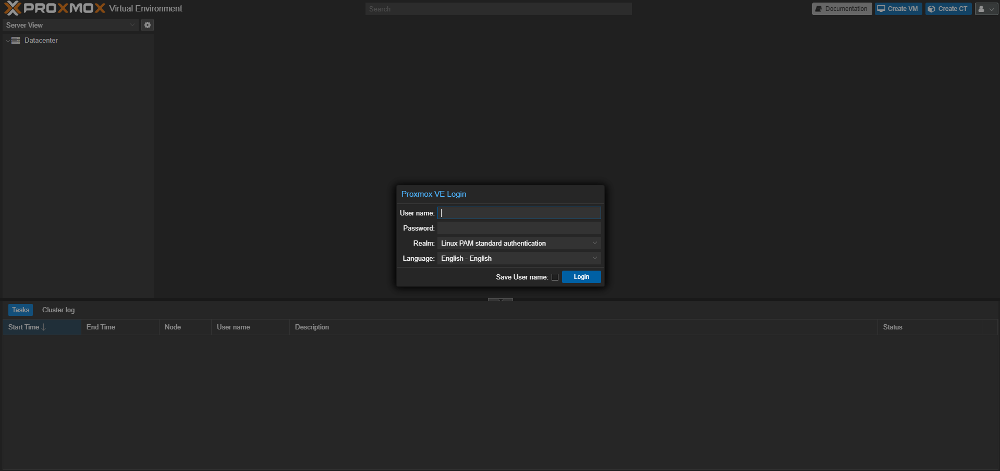
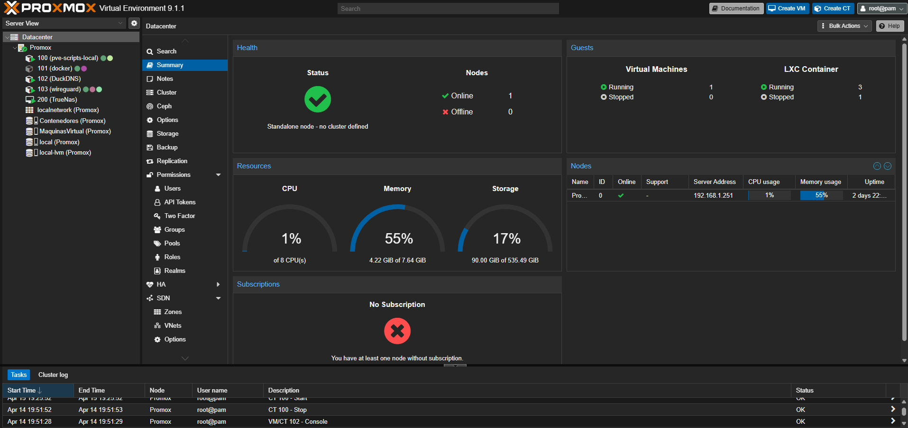

📘 Proyecto de Proxmox
Instalación
La instalación de Proxmox VE es bastante simple. Tendremos que descargar la ISO desde la página oficial de
Proxmox y montarla en un USB para instalar el sistema operativo en el servidor.
La versión que he utilizado es Proxmox VE 9.1.1.
Proceso de instalación
Una vez preparado el USB, iniciamos el servidor y seguimos el asistente de instalación que es bastante intuitivo.
Durante el proceso, configuramos los siguientes aspectos:
- Disco de instalación
- Configuración de red
- Credenciales
- Zona horaria
Una vez que ya está instalado, la gestión de Proxmox se realiza desde la interfaz web accediendo a la IP estática
que hemos configurado anteriormente. Cuando accedemos por primera vez a la interfaz web nos saldrá la pantalla de
inicio de sesión, donde tendremos que poner el usuario y contraseña que configuramos en la instalación. Una vez
iniciada sesión, se mostrará un panel similar al de la imagen (en mi caso ya tengo configurados contenedores y
máquinas virtuales como se puede observar).
Login Inicial
Login de acceso a la interfaz de Proxmox VE

Panel de Control
Panel de control principal de Proxmox VE, donde se pueden gestionar máquinas virtuales, contenedores y recursos
del sistema.

Servicios Implementados
Los servicios que tengo implementados en Proxmox son:
- WireGuard (VPN)
- DuckDNS (DNS dinámico)
- Docker
- TrueNAS
Todos estos servicios están montados en diferentes formas, algunos en contenedores y otros en máquinas virtuales.
🔐 WireGuard
WireGuard es un servicio de VPN que permite conectarse de forma segura a la red local desde cualquier lugar. En
este proyecto lo he utilizado para poder acceder a todos los servicios de mi red desde fuera de casa, como si
estuviera conectado directamente al router. Además, también permite navegar de forma más segura cuando estoy en
redes públicas.
🦆 DuckDNS
DuckDNS es un servicio de DNS dinámico que permite asociar un dominio a una IP pública que puede cambiar con el
tiempo. Lo he configurado para poder acceder a mi red desde el exterior sin necesidad de tener una IP fija, ya que
el dominio se actualiza automáticamente cada vez que cambia la IP.
🐳 Docker
Docker es una plataforma que permite ejecutar aplicaciones dentro de contenedores. En este proyecto lo he
utilizado para desplegar distintos servicios de forma rápida y organizada, sin necesidad de instalar todo
directamente en el sistema. Esto facilita mucho la gestión y permite añadir nuevos servicios de forma sencilla.
🗄️ TrueNAS
TrueNAS es un sistema operativo orientado al almacenamiento en red (NAS). Lo he utilizado como servidor de
almacenamiento para centralizar archivos dentro de la red, permitiendo acceder a ellos desde distintos
dispositivos. También se puede utilizar para realizar copias de seguridad.